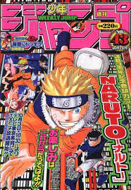

MY DAIRY: TREASURE CHEST OF HOBBIES AND THOUGHTS
my fav anime
GENRE
shonen
shoujo
seinen
slive of life
SHONEN
shonen is an editorial category of Japanese comics targeting an audience of adolescent boys.shonen anime is a category of anime made specifically for younger boys. Usually there is some type of main character, normally male, who has muscles, good martial arts abilities, and some type of ability to enhance their strength.
aot
black clover
my hero academia
onepeice



SHOUJO
Shōjo manga is an editorial category of Japanese comics targeting an audience of adolescent females and young adult women shōjo anime and manga traditionally tend to have a strong focus on relationships and character development, it is far too diverse to be pigeonholed so neatly.
my dress up darling
fruit basket
orange
wotokoi love is hard


SEINEN
youth; young man. Relatively uncommon in the west due to the emphasis on the male teen market, "seinen" is a demographic indicator for anime and manga aimed at a young adult male (college-aged) audience.
vinland saga
parasyte
tokyo ghoul
monster


SLICE OF LIFE
Slice-of-life animes have the capacity to take you on a journey to understand characters on a very intimate level. They allow you to get out of your own head and watch someone else's journey with happiness, pain, loss, fear and day-to-day struggles.
silent voice
barakomon
skip amd lofer
march comes in like a lion

SPORTS
genre of Japanese manga and anime that focuses on stories involving sports and other athletic and competitive pursuits.
Haikyuu
blue lock
Ao ashi
kuroko's basket ball
slam dunk


sites to watch anime
 zoro
zoro